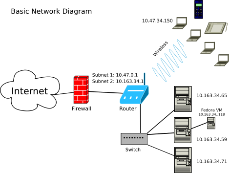

Networking
By the end of this section, you should know:
- The role of a system administrator in setting up, configuring, and monitoring networks, from small LANs to larger networks that interface with external networks.
- The structure and layers of the Internet Protocol Suite, including the Link, Internet, Transport, and Application layers.
- How the Address Resolution Protocol (ARP) is used to map IP addresses to MAC addresses, and
how to view network information using commands like
ip aandip link. - The distinction between public and private IP addresses, the ranges for private IPs, and the concept of IP subnets.
- How the Transmission Control Protocol (TCP) and User Datagram Protocol (UDP) differ in handling data, including typical use cases for each.
- The basics of TCP and UDP headers, and how to examine network traffic using
tcpdump. - The significance of ports in networking, common port numbers, and how ports help direct traffic to specific services.
- The concept of subnetting, including how subnet masks and CIDR notation help define network boundaries and control the number of hosts on a network.
- How to convert between binary and decimal for IP addressing, as well as the importance of subnet masks and broadcast addresses.
- The process of calculating available hosts in a subnet, including examples for both /24 and /16 subnet masks.
Getting Started
An important function of a system administrator is to set up, configure, and monitor a network. This may involve planning, configuring, and connecting the devices on a local area network, to planning and implementing a large network that interfaces with an outside network, and to monitoring networks for various sorts of attacks, such as denial of service attacks.
In order to prepare for this type of work, we need at least a basic understanding of how the internet works and how local devices interact with the internet. In this section, we will focus mostly on internet addressing, but we will also devote some space to TCP and UDP, two protocols for transmitting data.
Connecting two or more devices together nowadays involves the TCP/IP or the UDP/IP protocols, otherwise part of the Internet protocol suite. This suite is an expression of the more generalized OSI communication model.
The internet protocol suite is framed as a series of layers beginning with a lower layer, called the link layer,
that interfaces with internet capable hardware, to the highest layer, called the application layer,
e.g., the web (http).
The link layer describes the local area network. Devices connected locally, e.g., via Ethernet cables or local wifi, comprise the link layer. The link layer connects to the internet layer. Data going into or out of a local network must be negotiated between these two layers.
The internet layer makes the internet possible since it provides functionality to transmit data among multiple networks possible. The internet is, in fact, a network of networks. The primary characteristic of the internet layer is the IP address, which currently comes in two versions: IPv4 (a 32 bit number) and IPv6 (a 128 bit number). IP addresses are used to locate hosts on a network.
The transport layer makes the exchange of data on the internet possible. There are multiple protocols for the transport layer, but the two main ones are UDP and TCP. Very generally, the UDP places priority on data reaching its destination over the integrity of data. For example, streaming video, Voice-over-IP (VOIP), and online gaming are often transported via UDP because the loss of some pixels or some audio is acceptable for end users. TCP is used when the integrity of the data is important. If the data cannot be transmitted without error, then the data won’t reach its final destination until the error is corrected. As an example, purchases, bank exchanges, etc use TCP since financial transactions must be exact.
The application layer provides the ability to use the internet in particular ways. For example, the HTTP protocol enables the web. The web is thus an application of the internet. Likewise, the SMTP, IMAP, and POP protocols provide the basis for email exchange, DNS maps IP addresses to domain names, and we use SSH to connect to our virtual machines.
By application, we simply mean that these protocols provide the functionality for applications. They are not themselves considered user applications, like a web browser.
The Internet Protocol Suite
Link Layer
ARP (Address Resolution Protocol)
ARP (Address Resolution Protocol) is a protocol at the link layer and is used to map network addresses, like an IP address, to ethernet addresses. An ethernet address is more commonly referred to as the MAC or Media Access Control address, or the hardware address. Routers use MAC addresses to enable communication inside networks (w/in subnets or local area networks) so that computers within a local network can talk to each other on these subnets. Networks are designed so that IP addresses are associated with MAC addresses before systems can communicate over a network. Each of your internet capable devices, your smartphone, your laptop, your internet connected toaster, has a MAC address.
To get the MAC address for a specific computer, we can use the following commands:
ip a
Or:
ip link
In the above command,
ipis the command andaorlinkare considered objects (seeman ipfor details). Note thatip aandip linkprovide slightly different views of network interfaces.
The MAC addresses are reported on the link/ether line.
On my virtual server, the ip link command produces two numbered sections of output.
The first section refers to the lo or loopback device.
This is a special device that allows the computer to communicate with itself, and
it always has a MAC address of 00:00:00:00:00:00.
The next section on the machine refers to the ethernet card (e.g., ens4), and
this represents the hardware for system’s wired connection to the internet.
The MAC address is reported on the indented line below.
See man systemd.net-naming-scheme for more details.
We can get the IP information with the following command:
ip a
The ip a command reports both the MAC and IP addresses for the same devices.
Here it reports that the lo device has the IP address of 127.0.0.1.
It always has this IP.
On my Google Cloud machine, I get an IP address like 10.128.0.2/32 for the ens4 device.
This is a private IP address, which means it can only be used to locate the machine on the subnet.
The following two commands help identify parts of the local network (or subnet) and the routing table.
ip neigh
ip route
The ip neigh command produces the ARP cache.
This represents the other machines yours sees on the local network.
At the very least, it’ll report the IP address for the router your machine uses.
The ip route command is used to define how data is routed on the network but can also define the routing table.
Both of these commands are more commonly used on Linux-based routers.
These details enable the following scenario: A router gets configured to use a specific network address when it’s brought online. It searches the sub network for connected MAC addresses. It then assigns each of those MAC addresses an available IP address based on the available network address. Those network addresses are private IP addresses and will fall within a specific range (as discussed below).
Internet Layer
IP (Internet Protocol)
The Internet Protocol is used to uniquely identify a host on a network and place that host at a specific location (its IP address). If that network is subnetted (i.e., routed), then a host’s IP address will have a subnet or private IP address. This private IP address will not be directly exposed to the Internet.
Remember this: public IP addresses are distinct from private IP addresses. Public IP addresses are accessible on the internet. Private IP addresses are not, but they are accessible on subnets or local area networks.
Private IP address ranges are reserved address ranges. This means no public internet device will have an IP address within these ranges. The private address ranges include:
| Start Address | End Address | Network Size |
|---|---|---|
| 10.0.0.0 | 10.255.255.255 | Large |
| 172.16.0.0 | 172.31.255.255 | Medium |
| 192.168.0.0 | 192.168.255.255 | Small |
If you have a router at home, and examine the IP address for any of your devices connected to that router, like your phone or computer, you will see that it will have an address within one of the ranges above. For example, it might have an IP address like 192.168.0.4. This is a common IP address number assigned by a home router.
The difference between these ranges largely rests on the number of hosts they can accommodate. The 10.X.X.X private range can assign more IP addresses (more hosts) on its network than the 172.X.X.X range can, and the latter more than the 192.168.X.X range. This is why you’ll see the 10.0.0.0 IP range on bigger networks, like a university’s network. We’ll talk more about subnetwork sizes, shortly.
Example Private IP Usage
Let’s say my campus desktop’s IP address is 10.163.34.59/24 via a wired connection. And my office neighbor has an IP address of 10.163.34.65/24 via their wired connection. Both IP addresses are private because they fall within the 10.0.0.0 to 10.255.255.255 range. And it’s likely they both exist on the same subnet since they share the first three octets: 10.163.34.XX.
However, if we both, using our respective wired connected computers, searched Google for what’s my IP address, we will see that we share the same public IP address, which will be something like 128.163.8.25. We know that is a public IP address because it does not fall within the ranges listed above.
By entailment and without any additional information, we know that all traffic coming from our computers and going out to the internet looks like it’s coming from the same IP address (128.163.8.25). And in reverse, all traffic coming from outside our network first goes to 128.163.8.25 before it’s routed to our respective computers via the router.
Let’s say I switch my computer’s network connection to the campus’s wifi network.
When I check with ip a, I find that the computer now has a private IP address of 10.47.34.150/16.
You can see the pattern is different with this IP address than it was when it was connected via wire.
The reason it has a different pattern is because the laptop is now on an different subnet.
This wireless subnet was configured to allow more hosts to connect to it since it must allow for more devices
(i.e., laptops, phones, etc).
When I searched Google for my IP address from this laptop,
it reports 128.163.238.148.
Since this is a different public IP address from above, it indicates that the university owns a range of public IP address spaces.
Here’s a visual diagram of what this network looks like:

Using the ip Command
The ip command can do more than provide us information about our network.
We can also use it to turn a connection to the network on or off (and more).
The commands below show how we disable and then enable a connection on a machine.
Note that ens4 is the name of my network card/device.
We probably have the same device names, but note that it might be different.
sudo ip link set ens4 down
sudo ip link set ens4 up
Don’t run those commands on your Google Cloud servers otherwise your connection will be dropped and you’ll have to reboot the system from the web console.
Transport Layer
The internet (IP) layer does not transmit content, like web pages or video streams. This is the work of the transport layer. As discussed previously, the two most common transport layer protocols are TCP and UDP, but there are more.
TCP, Transmission Control Protocol
TCP or Transmission Control Protocol is responsible for the transmission of data and for making sure the data arrives at its destination w/o errors. If there are errors, the data is re-transmitted or halted in case of failure. Much of the data sent over the internet is sent using TCP.
UDP, User Datagram Protocol
The UDP or User Datagram Protocol performs a similar function as TCP, but it does not error check and data may get lost. UDP is useful for conducting voice over internet calls or for streaming video, such as through YouTube, which uses a type of UDP transmission called QUIC that has builtin encryption.
TCP and UDP Headers
The above protocols send data packets for TCP datagrams for UDP, but these terms may be used interchangeably. Packets for both protocols include header information to help route the data across the internet. TCP includes ten fields of header data, and UDP includes four fields.
We can see this header data using the tcpdump command, which requires sudo or being root to use.
The first part of the IP header contains the source address,
then comes the destination address, and so forth.
Aside from a few other parts, this is the primary information in an IP header.
If you want to use tcpdump, you should use it on your local computer and not on your Google Cloud instance.
I’m not sure how Google will respond to this kind of activity because it might be deemed malicious.
But to use it, first we identify the IP number of a host,
which we can do with the ping command, and then run tcpdump:
ping -c1 www.uky.edu
sudo tcpdump host 128.163.35.46
While that’s running, we can type that IP address in our web browser, or enter www.uky.edu, and
watch the output of tcpdump.
TCP headers include port information and other mandatory fields for both source and destination servers. The SYN, or synchronize, message is sent when a source or client requests a connection. The ACK, or acknowledgment, message is sent in response, along with a SYN message, to acknowledge the request for a connection. Then the client responds with an additional ACK message. This is referred to as the TCP three-way handshake. In addition to the header info, TCP and UDP packets include the data that’s being sent (e.g., a webpage) and error checking if it’s TCP.
Ports
TCP and UDP connections use ports to bind internet traffic to specific IP addresses. Specifically, a port associates a process with an application (and is part of the application layer of the internet suite), such as a web service or outgoing email. That is, ports provide a way to distinguish and filter internet traffic (web, email, etc) through an IP address. For example, port 80 is the default port for unencrypted HTTP traffic. Thus, all traffic going to IP address 10.0.5.33:80 means that this is HTTP traffic for the HTTP web service. Note that the port info is attached to the end of the IP address via a colon.
Other common ports include:
- 21: FTP
- 22: SSH
- 25: SMTP
- 53: DNS
- 143: IMAP
- 443: HTTPS
- 587: SMTP Secure
- 993: IMAP Secure
A list of the default ports/protocols on your Linux systems is contained in the following file:
less /etc/services
See also the Wikipedia page: List of TCP and UDP port numbers
IP Subnetting
Let’s now return to the internet layer and discuss one of the major duties of a systems administrator: subnetting.
Subnets are used to carve out smaller and more manageable subnetworks out of a larger network. They are created using routers that have this capability (e.g., commercial use routers) and certain types of network switches.
Private IP Ranges
When subnetting local area networks, recall that we work with the private IP ranges:
| Start Address | End Address |
|---|---|
| 10.0.0.0 | 10.255.255.255 |
| 172.16.0.0 | 172.31.255.255 |
| 192.168.0.0 | 192.168.255.255 |
It’s important to be able to work with IP addresses like those listed above in order to subnet; and therefore, we will need to learn a bit of IP math along the way.
IP Meaning
An IPv4 address is 32 bits (8 x 4), or four bytes, in size. In human readable context, it’s usually expressed in the following, decimal-based, notation style:
- 192.168.1.6
- 172.16.3.44
Each set of numbers separated by a dot is referred to as an octet. An octet is a group of 8 bits. Eight bits equals a single byte. By implication, 8 gigabits equals 1 gigabyte, and 8 megabits equals 1 megabyte. We use these symbols to note the terms:
| Term | Symbol |
|---|---|
| bit | b |
| byte | B |
| octet | o |
Each bit is represented by either a 1 or a 0. For example, the first address above in binary is:
- 11000000.10101000.00000001.00000110 is 192.168.1.6
Or:
| Byte | Decimal Value |
|---|---|
| 11000000 | 192 |
| 10101000 | 168 |
| 00000001 | 1 |
| 00000110 | 6 |
IP Math
When doing IP math, one easy way to do it is to simply remember that each bit in each of the above bytes is a placeholder for the following values:
128 64 32 16 8 4 2 1
Alternatively, from low to high:
| base-2 | Output |
|---|---|
| 20 | 1 |
| 21 | 2 |
| 22 | 4 |
| 23 | 8 |
| 24 | 16 |
| 25 | 32 |
| 26 | 64 |
| 27 | 128 |
It’s helpful to work backward. For IP addresses, all octets are 255 or less (256 total, from 0 to 255) and therefore do not exceed 8 bits or places. To convert the integer 192 to binary:
1 * 2^7 = 128
1 * 2^6 = 64 (128 + 64 = 192)
Then STOP. There are no values left, and so the rest are zeroes. Thus: 11000000
Our everyday counting system is base-10, but binary is base-2, and thus another way to convert binary to decimal is to multiple each bit (1 or 0) by the power of base two of its placeholder:
(0 * 2^0) = 0 +
(0 * 2^1) = 0 +
(0 * 2^2) = 0 +
(0 * 2^3) = 0 +
(0 * 2^4) = 0 +
(0 * 2^5) = 0 +
(1 * 2^6) = 64 +
(1 * 2^7) = 128 = 192
Another way to convert to binary: simply subtract the numbers from each value. As long as there is something remaining or the placeholder equals the remainder of the previous subtraction, then the bit equals 1. So:
- 192 - 128 = 64 – therefore the first bit is equal to 1.
- Now take the leftover and subtract it:
- 64 - 64 = 0 – therefore the second bit is equal to 1.
Since there is nothing remaining, the rest of the bits equal 0.
Subnetting Examples
Subnetting involves dividing a network into two or more subnets. When we subnet, we first identify the number of hosts (i.e., the size of the subnet) we will require on the subnet. For starters, let’s assume that we need a subnet that can assign at most 254 IP addresses to the devices attached to it via the router.
In order to do this, we need two additional IP addresses: the subnet mask and the network address/ID. The network address identifies the network and the subnet mask marks the boundary between the network and the hosts. Knowing or determining the subnet mask allows us to determine how many hosts can exist on a network. Both the network address and the subnet mask can be written as IP addresses, but these IP addresses cannot be assigned to computers on a network.
When we have determined these IPs, we will know the broadcast address. This is the last IP address in a subnet range, and it also cannot be assigned to a connected device/host. The broadcast address is used by a router to communicate to all connected devices on the subnet.
For our sake, let’s work through this process backwards; that is, let’s identify and describe a network that we are already connected to and for which we already know a device’s private IP address. We’ll work with example private IP addresses that exist on separate subnets.
Example IP Address 1: 192.168.1.6/24
Using the private IP address 192.168.1.6, let’s derive the network mask and the network address (or ID) from this IP address. First, convert the decimal notation to binary. State the mask, which is /24, or 255.255.255.0. And then derive the network addressing using an bitwise logical AND operation:
11000000.10101000.00000001.00000110 IP 192.168.1.6
11111111.11111111.11111111.00000000 Mask 255.255.255.0
-----------------------------------
11000000.10101000.00000001.00000000 Network Address 192.168.1.0
Note the mask has 24 ones followed by 8 zeroes. The /24 is used as CIDR notation and marks the network portion of the IP address. The remaining 8 bits are for the host addresses.
- 192.168.1.6/24
For Example 1, we thus have the following subnet information:
| Type | IP |
|---|---|
| Netmask/Mask | 255.255.255.0 |
| Network ID | 192.168.1.0 |
| Start Range | 192.168.1.1 |
| End Range | 192.168.1.254 |
| Broadcast | 192.168.1.255 |
Example IP Address 2: 10.160.38.75/24
For example 2, let’s start off with a private IP address of 10.160.38.75 and a mask of /24:
00001010.10100000.00100110.01001011 IP 10.160.38.75
11111111.11111111.11111111.00000000 Mask 255.255.255.0
-----------------------------------
00001010.10100000.00100110.00000000 Network Address 10.160.38.0
| Type | IP |
|---|---|
| Netmask/Mask | 255.255.255.0 |
| Network ID | 10.160.38.0 |
| Start Range | 10.160.38.1 |
| End Range | 10.160.38.254 |
| Broadcast | 10.160.38.255 |
Example IP Address 3: 172.16.1.62/24
For example 3, let’s start off with a private IP address of 172.16.1.62 and a mask of /24:
10101100 00010000 00000001 00100111 IP 172.16.1.62
11111111 11111111 11111111 00000000 Mask 255.255.255.0
-----------------------------------
10101100 00010000 00000001 00000000 Network Address 172.16.1.0
| Type | IP |
|---|---|
| Netmask/Mask | 255.255.255.0 |
| Network ID | 172.16.1.0 |
| Start Range | 172.16.1.1 |
| End Range | 172.16.1.254 |
| Broadcast | 172.16.1.255 |
Determine the Number of Hosts
To determine the number of hosts on a CIDR /24 subnet, we look at the start and end ranges. In all three of the above examples, the start range begins with X.X.X.1 and ends with X.X.X.254. Therefore, there are 254 maximum hosts allowed on these subnets because 1 to 254, inclusive of 1 and 254, is 254.
Example IP Address 4: 10.0.5.23/16
The first three examples show instances where the CIDR is set to /24. This only allows 254 maximum hosts on a subnet. If the CIDR is set to /16, then we can theoretically allow 65,534 hosts on a subnet.
For example 4, let’s start off then with a private IP address of 10.0.5.23 and a mask of /16:
00001010.00000000.00000101.00010111 IP Address: 10.0.5.23
11111111.11111111.00000000.00000000 Mask: 255.255.0.0
-----------------------------------------------------------
00001010.00000000.00000000.00000000 Network ID: 10.0.0.0
| Type | IP |
|---|---|
| IP Address | 10.0.5.23 |
| Netmask/Mask | 255.255.0.0 |
| Network ID | 10.0.0.0 |
| Start Range | 10.0.0.1 |
| End Range | 10.0.255.254 |
| Broadcast | 10.0.255.255 |
Since the last two octets/bytes now vary, we count up by each octet. Therefore, the number of hosts is:
| IPs | |
|---|---|
| 10.0.0.1 | |
| 10.0.0.255 | = 256 |
| 10.0.1.1 | |
| 10.0.255.255 | = 256 |
- Number of Hosts = 256 x 256 = 65536
- Subtract Network ID (1) and Broadcast (1) = 2 IP addresses
- Number of Usable Hosts = 256 x 256 - 2 = 65534
IPv6 subnetting
We’re not going to cover IPv6 subnetting, but if you’re interested, this is a nice article: IPv6 subnetting overview
Conclusion
As a systems administrator, it’s important to have a basic understanding of how networking works, and the basic models used to describe the internet and its applications. System administrators have to know how to create subnets and defend against various network-based attacks.
In order to acquire a basic understanding, this section covered topics that included:
- the internet protocol suite
- link layer
- internet layer
- transport layer
- IP subnetting
- private IP ranges
- IP math
In the next section, we extend upon this and discuss the domain name system (DNS) and domain names.